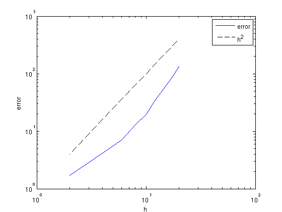
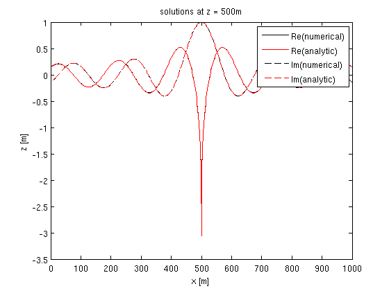
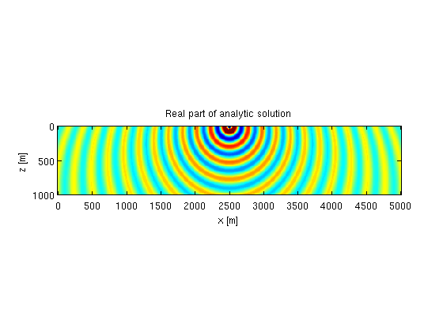
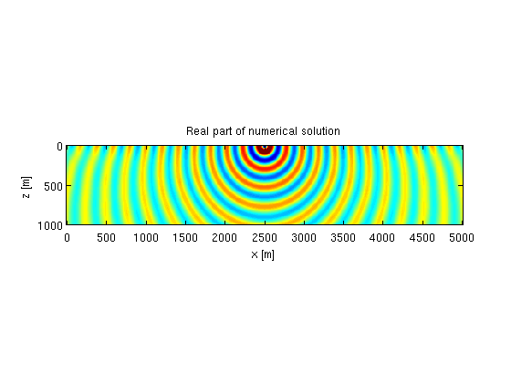
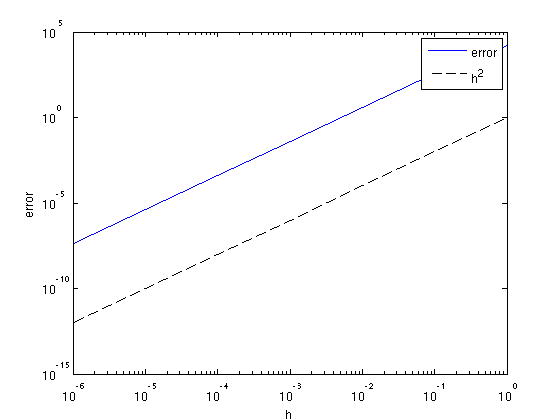

2D constant-density acoustic frequency-domain modeling, linearized modeling and imaging: Testing
This script presents some basic tests of the modeling code.
Contents
Analytic solution for constant medium
We test the code against the analytic solution for a constant velocity and plot the error as a function of the gridspacing to verify the order of accuracy of the discretization. The 9-point mixed-grid discretization of [1] uses a regular and rotated 5-point discretization of the Laplace operator, which makes it technically a second-order scheme. It is optimized to minimize numerical dispersion, though, and hence expected to be more accurate than a regular 5-point discretization.
% velocity [m/s] v0 = 2000; % size of domain LxL m L = 1000; % sponge boundary size B m B = 250; % frequency [1/s] f = 10; % gridspacings h = [20:-2:2]; e = 0*h; % loop for k = 1:length(h) % grid paramets model.o = [0 0]; model.d = [h(k) h(k)]; model.n = [floor(L/h(k)) + 1 floor(L/h(k)) + 1]; % source and receiver setup model.zsrc = 500; model.xsrc = 500; model.zrec = 0:h(k):L; model.xrec = 0:h(k):L; % absorbing boundary model.nb = [floor(B/h(k)) + 1 floor(B/h(k))]; % frequency model.freq = f; % ricker wavelet model.f0 = 0; model.t0 = 0; % source matrix Q = 1; % slowness-squares model [km^2/s^2] m = 1e6*ones(prod(model.n),1)./v0.^2; % analytic solution D1 = G([v0;0],Q,model); % numerical solution D2 = F(m,Q,model,1); % error e(k) = norm(D1 - D2); end
The figure below confirms that the scheme is second order.
% plot error figure; loglog(h,e,h,h.^2,'k--'); xlabel('h');ylabel('error');legend('error','h^2'); % plot z = 0:h(k):1000; x = 0:h(k):1000; D1 = reshape(D1,model.n); D2 = reshape(D2,model.n); iz = floor(length(z)/2) + 1; figure; plot(x,real(D1(iz,:)),'k',x,real(D2(iz,:)),'r',x,imag(D1(iz,:)),'k--',x,imag(D2(iz,:)),'r--'); legend('Re(numerical)','Re(analytic)','Im(numerical)','Im(analytic)'); xlabel('x [m]');ylabel('z [m]'); title(['solutions at z = ' num2str(z(iz)) 'm']); 
Analytic solution for linear velocity profile
The analytic Greens function for a linear velocity profile \(v = v_0 + \alpha z\) is presented by [2]. An example is shown below.
% velocity profile v0 = 2000; alpha = 0.7; % grid z = 0:10:1000; x = 0:10:5000; [o,d,n] = grid2odn(z,x); % gridded slowness-squared m = vec((1e6./(v0+alpha*z').^2)*ones(size(x))); % frequency f = 10; % modeling parameters model.o = o; model.d = d; model.n = n; model.nb = [50 50]; model.freq = f; model.f0 = 0; model.t0 = 0; model.zsrc = 10; model.xsrc = mean(x); model.zrec = z; model.xrec = x; % source Q = 1; % analytic solution G1 = G([v0;alpha],Q,model); % numerical solution G2 = F(m,Q,model,1); % plot figure; imagesc(x,z,reshape(real(G1),n),[-10 10]);axis equal tight; title('Real part of analytic solution'); xlabel('x [m]');ylabel('z [m]'); figure; imagesc(x,z,reshape(real(G2),n),[-10 10]);axis equal tight; title('Real part of numerical solution'); xlabel('x [m]');ylabel('z [m]'); 
Jacobian test
The Jacobian of the modeling operator is derived by linearizing the discretized system. We can test the accuracy by considering the Taylor approximation
\(F(\mathbf{m} + h\delta\mathbf{m}) = F(\mathbf{m}) + hJ\delta\mathbf{m} + \mathcal{O}(h^2).\)
% setup model parameters model.o = [0 0]; model.d = [10 10]; model.n = [101 101]; model.nb = [20 20]; model.freq = [10 15]; model.f0 = 10; model.t0 = 0.01; model.zsrc = 15; model.xsrc = 0:100:1000; model.zrec = 10; model.xrec = 0:5:1000; % source matrix Q = speye(length(model.xsrc)); % constant velocicty v0 = 2000; m = 1e6/v0.^2*ones(prod(model.n),1); % random perturbation, set values close to the edge to zero. dm = randn(model.n); dm([1:20 end-20:end],:) = 0; dm(:,[1:20 end-20:end]) = 0; dm = dm(:); % data and Jacobian [D0, J0] = F(m,Q,model); % linearized data dD = J0*dm; % stepsizes h = 10.^[0:-1:-6]; e = 0*h; for k = 1:length(h) D1 = F(m+h(k)*dm,Q,model); e(k) = norm(D1 - D0 - h(k)*dD); end % plot error figure; loglog(h,e,h,h.^2,'k--'); xlabel('h');ylabel('error');legend('error','h^2');
The figure confirms the error decreases as \(h^2\).
Adjoint test
The adjoint test will ensure that our implementation of the adjoint satisfies the formal definition of the adjoint:
\(\langle A\mathbf{x},\mathbf{y}\rangle = \langle \mathbf{x},A^*\mathbf{y}\rangle\)
% setup model parameters model.o = [0 0]; model.d = [10 10]; model.n = [51 51]; model.nb = [10 10]; model.freq = [10 15]; model.f0 = 10; model.t0 = 0.01; model.zsrc = 15; model.xsrc = 0:100:1000; model.zrec = 10; model.xrec = 0:5:1000; % source matrix Q = speye(length(model.xsrc)); % constant velocicty v0 = 2000; m = 1e6/v0.^2*ones(prod(model.n),1); % Jacobian operator J = oppDF(m,Q,model); % test for 10 random vectors for k = 1:10 x = randn(prod(model.n),1); y = J*x; left(k) = gather((J*x)'*y); right(k) = gather(x'*(J'*y)); end
The quantities left and right should be the same up to numerical precision, which we can easily verify by looking at the relative error:
% error
abs(left - right)./max(abs(left),abs(right))
ans =
1.0e-15 *
Columns 1 through 7
0.1689 0.1655 0 0 0 0.2010 0.1802
Columns 8 through 10
0.1255 0.5508 0.1557
References
[1] C-H Jo,* C. Shin,* and J.H. Suh, 1996. An optimal 9-point, finite-difference, frequency-space, 2-D scalar wave extrapolator Geophysics 61(2), 529-537.
[2] B.N. Kuvshinov, W.A. Mulder. The exact solution of the time-harmonic wave equation for a linear velocity profile Geophysical Journal International 167(2), 659–662, 2006.